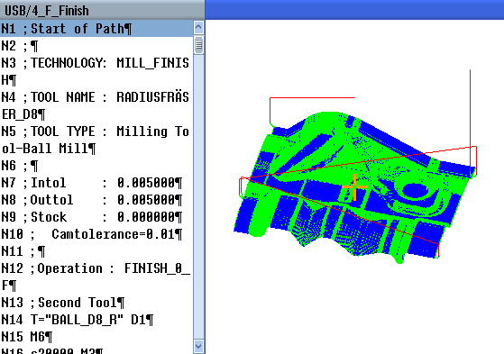

Bei großen Formenbau-Programmen, wie sie von CAD/CAM-Systemen bereitgestellt werden, haben Sie die Möglichkeit, sich mithilfe einer Schnellansicht die Bearbeitungsbahnen anzeigen zu lassen. Sie haben so einen schnellen Überblick über das Programm und haben die Möglichkeit es evtl. noch zu korrigieren.
| | Maschinenhersteller Die Formenbauansicht ist eventuell ausgeblendet. Beachten Sie hierzu die Angaben des Maschinenherstellers. |
Programmkontrolle
Sie haben folgende Kontrollen:
Hat das programmierte Werkstück die richtige Form?
Bestehen grobe Verfahrfehler?
Welcher Pogrammsatz ist nicht korrekt programmiert?
Wie wird an- und abgefahren?
Interpretierbare NC-Sätze
Folgende NC-Sätze werden bei der Formenbauansicht unterstützt.
Typen
Linien
G0, G1 mit X Y Z
Kreise
G2, G3 mit Mittelpunkt I, J, K oder Radius CR, abhängig von der Arbeitsebene G17, G18, G19, CIP mit Kreispunkt I1, J1, K1 oder Radius CR
Inkrementalangabe IC und Absolutangabe AC möglich
Bei G2, G3 und unterschiedlichem Radius in Start und Ende wird archimedische Spirale genutzt
Orientierung
Rundachsprogrammierung mit ORIAXES oder ORIVECT per ABC bei G0, G1, G2, G3, CIP, POLY
Orientierungsvektorprogrammierung mit ORIVECT per A3, B3, C3 bei G0, G1, G2, G3, CIP
Rundachsen werden per DC angegeben
G-Codes
Arbeitsebenen (zur Kreisdefinition G2, G3): G17 G18 G19
Inkremental- oder Absolutangabe: G90 G91
Folgende NC-Sätze werden bei der Formenbauansicht nicht unterstützt.
Helixprogrammierung
Rationale Polynome
Andere G-Codes bzw. Sprachbefehle
Alle nicht interpretierbaren NC-Sätze werden einfach überlesen.
Gleichzeitige Ansicht von Programm und Formenbauansicht
Im Editor haben Sie die Möglichkeit, sich neben der Anzeige der Programmsätze gleichzeitig die Formenbauansicht hinzuzuschalten.
Sie haben die Möglichkeit, parallel zwischen den NC-Sätzen und den zugehörigen Punkten in der Formenbauansicht hin und her zuspringen.
Wenn Sie links im Editor den Cursor auf einen NC-Satz mit Positionsangaben setzen, wird dieser NC-Satz in der Grafikansicht markiert.
Wenn Sie rechts in der Formenbauansicht über Mausklick einen Punkt anwählen, wird umgekehrt der NC-Satz im linken Teil des Editors markiert. So springen Sie direkt an die Stelle des Programms, wenn Sie eventuell einen Programmsatz editieren wollen.
Wechseln zwischen Programmfenster und Formenbauansicht | |
| | Drücken Sie die Taste <NEXT WINDOW>, wenn Sie zwischen Programmfenster und Formenbauansicht wechseln wollen. |
Formenbauansicht ändern und anpassen
Wie bei Simulation und Mitzeichnen haben Sie die Möglichkeit, die Formenbauansicht zur optimalen Betrachtung zu ändern und anzupassen.
Grafik vergrößern und verkleinern
Grafik verschieben
Grafik drehen
Ausschnitt ändern